31.05.2015
Lotte Boon & Petros Panagiotis Orfanos
The following are unedited fieldnotes that anthropologist Jip van Steenis has written during the Full Moon Cleansing Ritual. Fieldnotes are a method of description cultural anthropologists use to describe things that occurre while observing a phenomena. These fieldnotes are accompanied by photos taken of the environment of the event.
20:53
The conditions at forehand already mark the coming event. The time it is about to start is ten at night. It formulates the events of daytime. All is awaiting the event at midnight. There is another thing that prepares for what is about to happen. I, and I presume all visitors, got a code to get in from a unknown telephone number. A language I do not possess. Another precondition is the dress code: black. I was sent a reminder a few hours before. I do not own black clothing and that’s what I replied. “We do suggest you to arrange it, cause otherwise it isn’t possible for you to enter. Our order can’t make exceptions” was the remark I got back. Host Tirza fixed me some black clothes in the end (she had a safety stack in the back). Never before there was this much preparation needed for an opening. It’s all is very unlike all before.
21:55
Gathering in the hallway of the Vondelpark house. About ten people are already here. People chose their black to come to this event. They seem quite afraid to talk to each other. They formed a silent circle.
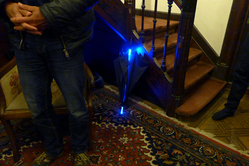
21:57
More people enter and the awkwardness fades away. The circle is broken and people dare to talk. People ask each other the usual “how are u’s” and give hugs.
22:00
It is ten. An ancient gothic-like music comes from upstairs. In all the chatter no one seems to notice.
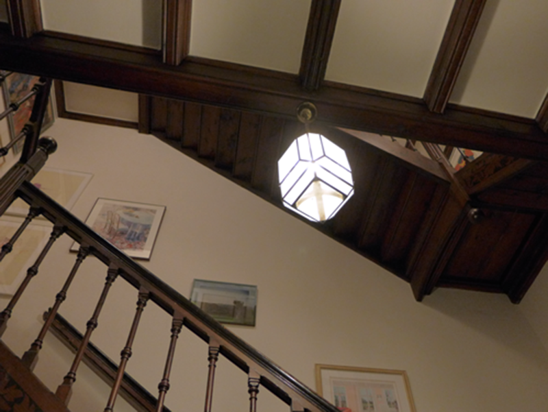
22:02
Two past ten. The gothic music stopped, but people start to chat more silently in awareness of something that might be about to happen.
22:03
Two past ten. The gothic music stopped, but people start to chat more silently in awareness of something that might be about to happen.
22:05
Two past ten. The gothic music stopped, but people start to chat more silently in awareness of something that might be about to happen.
22:07
Two past ten. The gothic music stopped, but people start to chat more silently in awareness of something that might be about to happen.
22:09
Two past ten. The gothic music stopped, but people start to chat more silently in awareness of something that might be about to happen.
22:10
Two past ten. The gothic music stopped, but people start to chat more silently in awareness of something that might be about to happen.
22:12
Two past ten. The gothic music stopped, but people start to chat more silently in awareness of something that might be about to happen.
22:13
Two past ten. The gothic music stopped, but people start to chat more silently in awareness of something that might be about to happen.
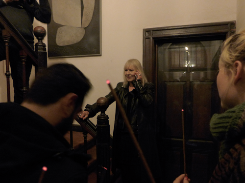
22:15
Some chat right through it, others are waiting for a change. Now the figurine starts moving where she first sat silence.
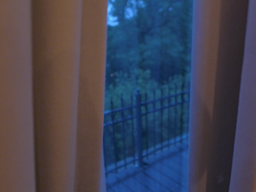
22:17
Two guys keep chatting through it, but the loud sounds allows this to happen.
22:18
I don’t know how to cover all the movements the figurine is making. I can say she’s blindfolded and seems to know what’s she’s doing.


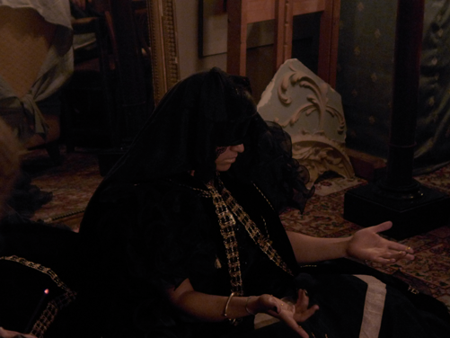
22:22
Her garments are really luxurious. They are black with touches of gold. They match the surroundings of this living room well. The light of several candles in the room suit the gold of her orthodox-like cape well.
22:23
Is this figure in trance or is she’s faking it? I am unsure if we are witnessing a theatrical performance or a genuine ritual of moon cleansing. (But maybe the authenticity of this ritual is not such an interesting question).
22:25
It’s lasting for about ten minutes now. A girl sitting next to me grabs her phone to connect herself to social media.
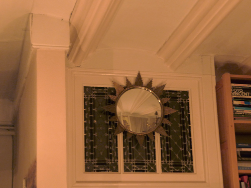
22:28
With her movements the figurine is undressing herself elegantly from her black garment, uncovering something with even more golden details.
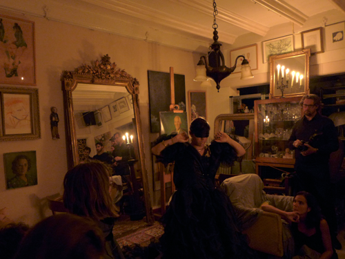
22:30
More and more from the outfit is uncovered. What first was hidden, is now for certain a young woman.
22:32
Peoples are staring, the eyes stand glassy. It’s more easy for me to describe what the watching crowed is doing, than what the performer is performing. The dancelike movements are simply more difficult to describe.
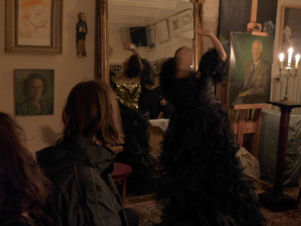
22:35
The girl is unlocking herself from a fixed spot. She’s moving more into the crowed. She’s touching the leg of a guy sitting watching on a chair. It doesn’t show if he’s amused.
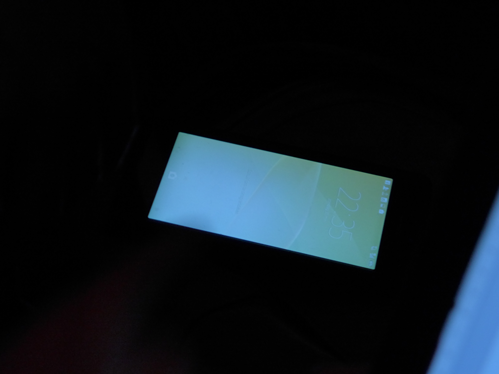
22:37
This first connection didn’t create real change in the happenings. Although this might be different for the young woman who’s performing. Her movements do differ, I might just not be too aware.
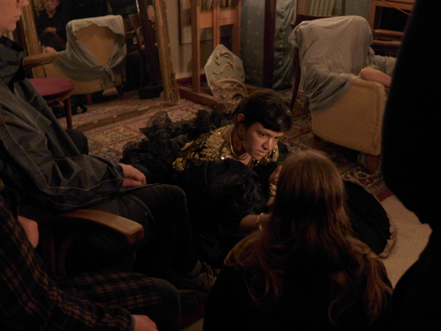
22:39
Due to the duration people start to look around, finding contact with one another. In the mirror behind the performing girl I see three people walking away. It might be the repetition of movements and music people cannot stand. Repetition can be penetrating.
22:41
The restlessness among the crowed is growing. Some guy moved to the balcony behind, to smoke.
22:45
Looking around I discover a girl who is definitely not dressed in black. She’s wearing a baby pink dress.
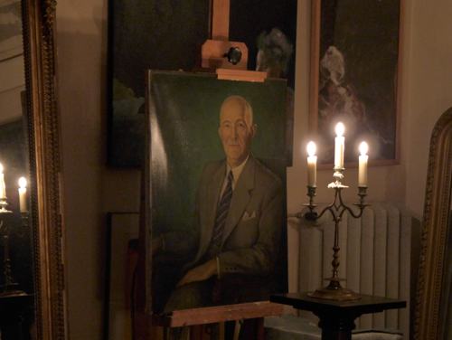
22:47
The sound of a crying woman creeps into the mix of choir music, but fades away again. I thought a change was about to come but this is untrue.
22:51
The guy who was touched earlier on the leg by the performer chose to fall asleep in his chair.
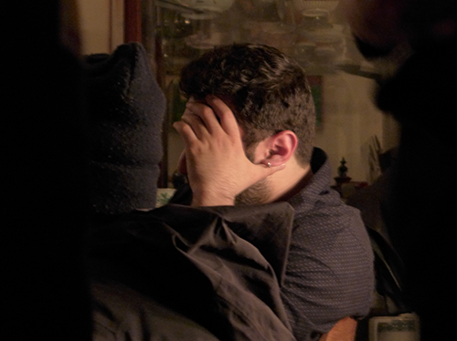
22:59
A guy next to me suggests this might be an “Escape Game”, and we may be yet unaware of that fact.
23:00
No person other then the woman performing is in concentration. Me and my neighbours wonder if this will last forever.
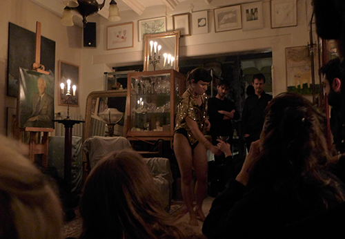
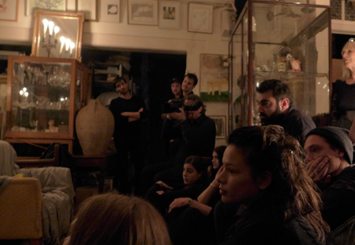
23:10
More undressing occurs. She’s taking of the dress, and uncovers a bathing suit.
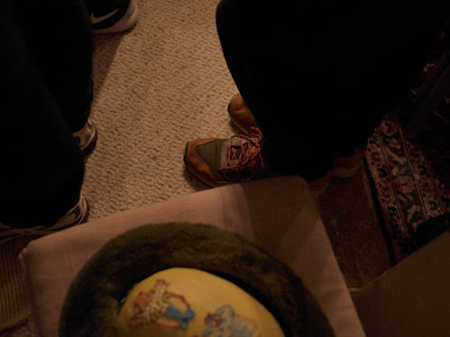
--- coverage missing ---
23:39
About half an hour ago host Tirza got a call with yet one other instruction. It’s message was addressed to me. Tirza took me by the hand, away from the happenings in the living room. I needed to come backstage. I took the laptop for this coverage with me, but it was of no use. I had to lay it aside. I was blindfolded by Petros and Lotte, being put on an acrylic cape and golden face paint (same as the performer wears on face and arms). I thought the backstage organisers decided I needed a role in this performance, but the blindfolding and ‘caping’ was all that occurred. I was sent back and could experience the performance again that seemed unchanged. (But how can I know?). Some people looked at my new outfit with curiosity, but soon they noticed that I as factor would bring nothing new. I had the feeling that the kidnapping took me from my role of covering the event – and so I stopped and decided I had nothing to tell regularly no more. I changed to summing up, and cut my voice.
23:45
In my mouth is the taste of pie which only after one and a half hours someone dared to cut and hand out. A cheap sweet taste that brought some change (a thing people seemed hungry for).
23:50
Half of the room left, and it’s ten minutes to ten now. I believe the event is about to end. Only a few still look a the girl performing. She has an incredible lasting energy. She keeps moving, her eyes are shut.
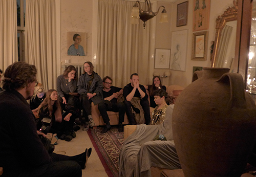
23:55
A lady directs us to go outside. She was among the crowed but is instructed to tell us. She tells us there is beers outside. That’s by far the only obvious identification with an art opening yet. It’s a cue everyone here is familiar with.
23:59
Though I didn’t dare to join them outside yet. The girl performing just took of one other element of garment, uncovering one other glittering thing. She shows some belly dancing. This young woman knows how to move. I’m left with, let me count, 5 people. They’ll seem to wait for the bigger change, but I guess there will be no ending to this. The end must probably be when we depart, and here I decide to do so.
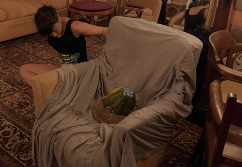
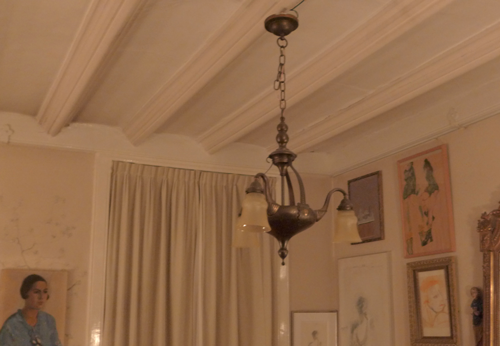
00:01
Outside, where we all gathered about two hours ago, I find a crowed at the doorstep. Drinking both Jupiler and Heineken. But this is not worthy for coverage, this ritual we know.
------
Fieldnotes by Jip van Steenis
Photos by Polarlicht